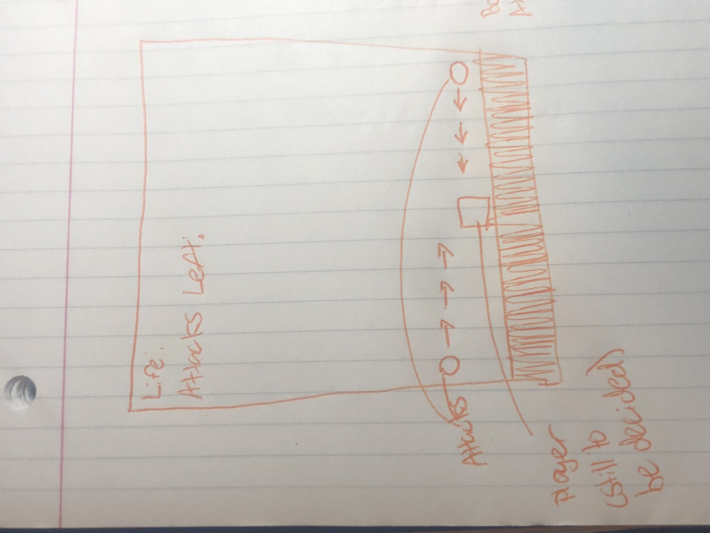
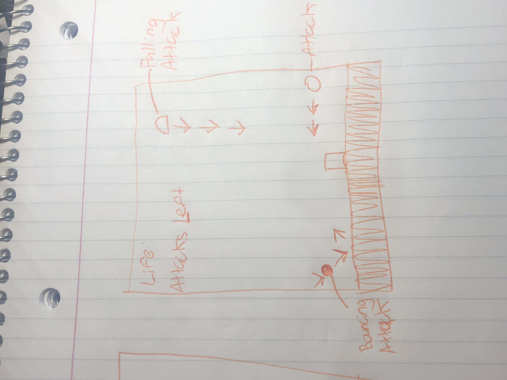

Development Process
To start off my development of my game, I began to thoroughly design how I wanted my game to play as. After I was finished with my design, I began working on a skeleton of my code and the basic states of the game that I would need as well as intializing the basic fields I would need. I made sure to create my app and define the width and height as well as a color that would allow it shine. I also made sure to make sure that all of my game states could be accessed through one way or another. Once I achieved that, I began to work on creating my assets for my game, something that I am quite proud of. While deciding the art style to go with, I decided on pixel art, which I made in Photoshop. I quickly fell in love with creating all my different assets. Before this project, I was always quite daunted by Photoshop's interface, but now I feel comfortable with it.
Once I completed all my assets, I began loading them via my ES6 classes and then loading them into their respective scenes at the right locations. I then focused on the gameplay itself. I started with getting the movement and jumping to work correctly, which took some time and research on how to accomplish that. I eventually I decided to control movements via the gameloop, which updates them every frame. Once I completed movement, I began to work on spawning in the attacks from different locations on screen and then determining the collisions. Once I got that working, I began working on the home stretch, in which I tidied up my game and its gameplay(making sure the player can't go out of bounds, added a timer, worked a bit on the webpage but kept it simple).
Genre
Nature's Wrath is a bullet hell platformer, in which the player must dodge projectiles shot at them which travel at varying speeds with the intent to kill.
Platform
I plan to have the platform mainly be on Desktop Web
Story
Mother Nature has grown tired of all organic life taking it for granted. She plans to destroy all current life and start anew. That is, if she can manage to kill anyone. Run and jump, your life depends on it!
Aesthetics
I want to aim for a cartoonish style that is a great contrast to the murderous intent that Mother Nature wishes upon the player and the rest of life. The background of the game will be filled with lush greenery, showcasing the beautiful world that Mother Nature wishes to create without organic life.
Gameplay
The player wil be able to use WASD/Arrow Keys to move themselves. They'll be able to move left and right and jump over attacks, and if I have time, I wish to incorporate a fast falling system, which would allow the player to carefully control their jumps to dodge the incoming attacks. When starting off, I'll showcase a brief blurb of text explaining to the player on their controls. Then, for each new attack that is used against the player, I'll start off with an easy one, to teach the player how the projectile moves, and ramp up the difficulty from there. For example, if I have a bouncing projectile that once it hits the walls it'll bounce back towards the player, I'll showcase it first, and then up the speed so that the bounce will be faster and harder to dodge.
Mockups


Other
I'm especially proud of my assets that I used for this project. I gained a new interest and love for pixel art, which I am going to continue doing after this project! You can find my assets in the game as well as in my images folder.
Sources:
Gigakoops - Free Music Archive
Hit Sound - Freesound
Google Fonts - Nunito Sans
Meeting the Requirements
To meet the requirements, I made sure to make sure that my css and html were validated as I worked on them along the way. I followed the coding conventions(only let and const, naming functions correctly, no console logging in the final product). I made sure to follow D.R.Y. and also made sure that my game is simple to navigate and use. It works well simply and it taught me a lot on how to better improve other types of games in the future.
About Me
Hi! My name is Gabe Goldsteen and I am a 2nd year Game Design and Development student at RIT. Some of my best skills are design, storytelling, and keeping everything within a logical scope. I'm also proud of my programming, however I wish to become more fluent at it as well. Additionally, I'm really invested in learning as much as I can about 3d modeling as I really enjoy doing it!